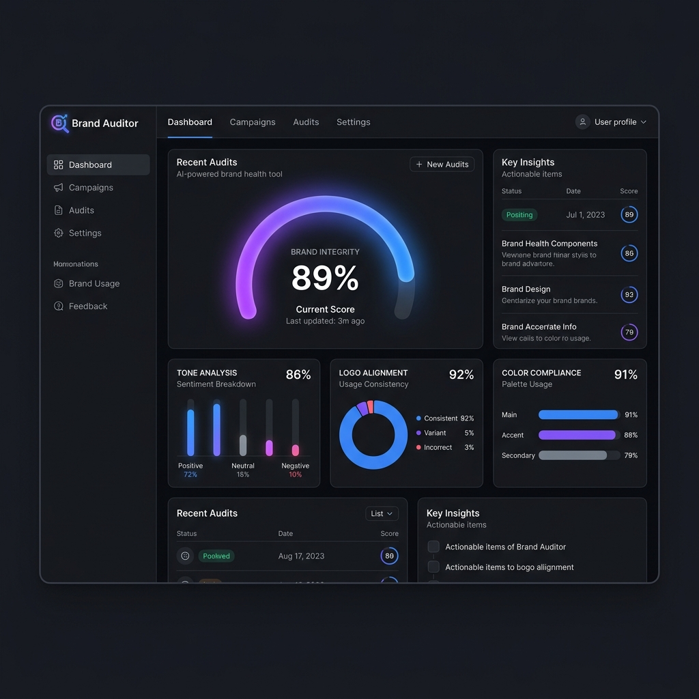
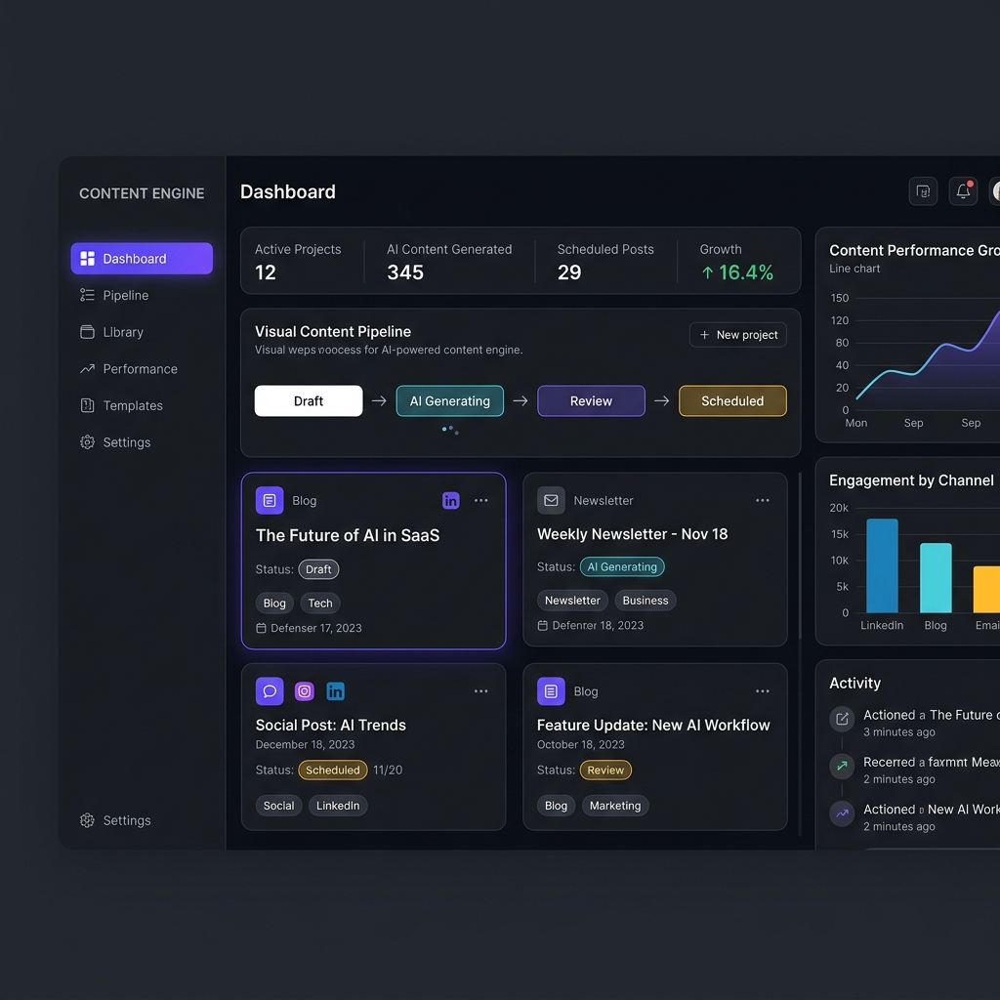
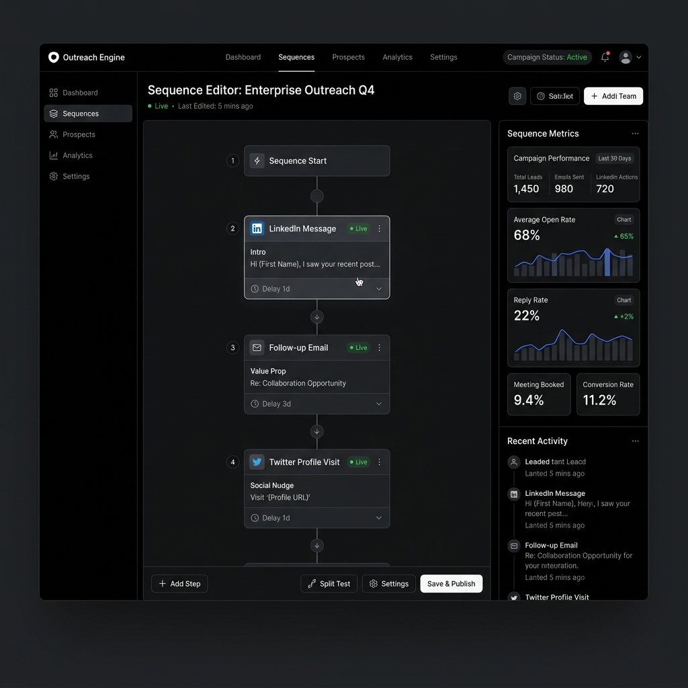

Selected Work.
An audit of systems and platforms we have scoping, designed, built, and deployed for our partners. We focus on business workflows, not dev templates.
AI Brand Auditor
Automating compliance checking across visual layouts and SaaS UI structures.
Compliance checks take hours.
Computer Vision checks design guidelines.
Audit latency reduced to 12 seconds.

Content Engine
Automating research, draft compilation, scheduling, and multi-channel publication pipelines.
Scoping drafts is manually repetitive.
LLM pipeline drafting custom templates.
Compiled 340+ entries with 16.4% traffic growth.

Founder Inbox
A unified semantic mailbox dashboard triage sorting relationship updates and investor leads.
Manual triage causes contact bottleneck.
Email summaries and task triage vectors.
100% email coverage, 9.4% conversion increase.

Page Pipeline
Sequence builder automating sales triggers across multiple active API nodes.
Founders waste hours on custom outreach.
Multi-channel event trigger pipeline system.
68% open rates, 22% reply rates mapped.
